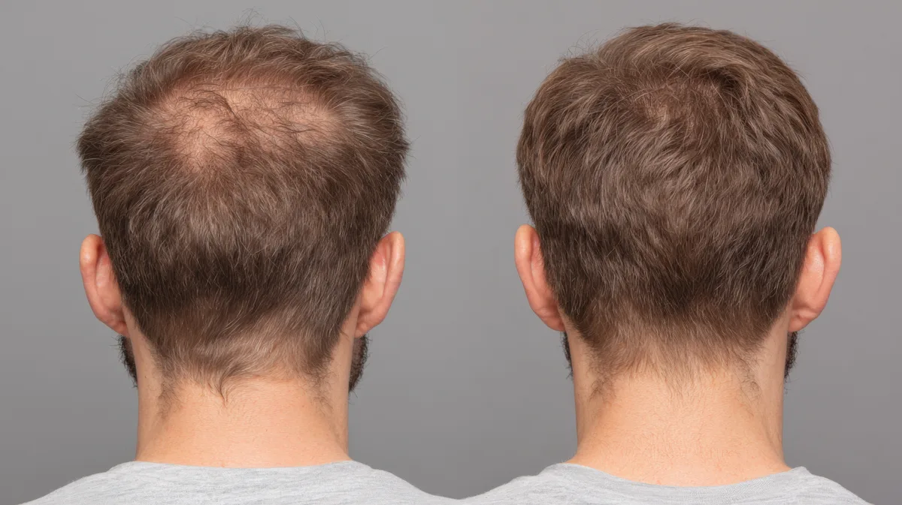
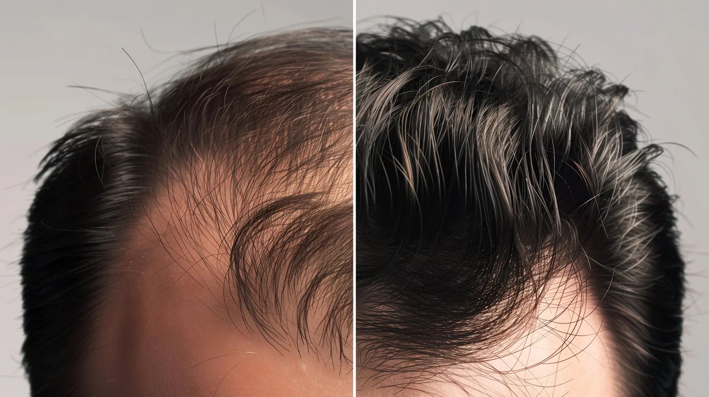

AntesDepois9 MESES DE TRATAMENTO
“Ao fazer o tratamento, desisti de fazer o implante. Foram 9 meses de tratamento e obtive um ótimo resultado.”
Antonio, 30 anosUm médico avalia seu caso, escolhe o bloqueador e monta o tratamento completo. A avaliação é gratuita.
A avaliação é gratuita. Você só paga se o médico indicar e você decidir seguir.

Resposta curta: a finasterida e a dutasterida bloqueiam o DHT, o hormônio ligado à queda de cabelo masculina. A finasterida age em um tipo da enzima que forma o DHT; a dutasterida, nos dois. Qual usar depende do seu caso, e quem define é o médico.
Fórum, vídeo, bula: cada um diz uma coisa. Na Elevamed, um médico olha o seu caso, escolhe o caminho e continua do seu lado nos 4 meses.
Decidir com um médicoO corpo transforma parte da testosterona em DHT por meio de uma enzima, a 5-alfa-redutase. Nos fios sensíveis, o DHT encolhe o folículo até o fio ficar fino e parar de crescer. Os dois bloqueadores agem nessa conversão.
Reduz a conversão de testosterona em DHT agindo no tipo 2 da enzima, o mais presente no folículo do couro cabeludo. Menos DHT chega ao fio, e a queda tende a desacelerar.
Faz o mesmo caminho, mas age nos tipos 1 e 2 da enzima. Por isso a redução do DHT é mais ampla. O médico avalia quando esse caminho faz sentido.
| Finasterida | Dutasterida | |
|---|---|---|
| Como age | Bloqueia o tipo 2 da enzima | Bloqueia os tipos 1 e 2 da enzima |
| Redução do DHT | Focada | Mais ampla |
| Quando costuma entrar | Ponto de partida comum | Casos que pedem ação mais ampla |
| Usadas juntas? | Não. O médico indica uma ou outra. | |
| Quem escolhe | O médico, na sua avaliação | |
Não é sobre qual é mais forte. É sobre qual faz sentido para o seu caso.
Bloquear o DHT freia a causa. Para o fio voltar mais forte, o protocolo da Elevamed combina os ativos certos e acompanha você mês a mês.
Os resultados são individuais e podem variar de pessoa para pessoa.
Você responde um questionário de saúde em menos de 5 minutos, sem sair de casa.
Cabelo não cresce da noite para o dia. Veja o caminho real.
O fio cresce sem parar, nutrido pelos vasos na base do folículo. Cerca de 85% a 90% dos seus fios estão nesta fase agora.
Por isso o resultado aparece entre o 3º e o 4º mês: o tratamento age no próximo ciclo do fio.
E NO SEU TRATAMENTONada visível ainda, e tudo bem. O tratamento já age por dentro. Pode haver uma queda temporária: é o ciclo do fio se reorganizando.
 4º mês grátis
4º mês grátisAs duas bloqueiam o DHT. A finasterida age no tipo 2 da enzima que forma o DHT; a dutasterida age nos tipos 1 e 2, com redução mais ampla. Qual usar é decisão do médico, a partir da sua avaliação.
A dutasterida é um dos bloqueadores de DHT que o médico pode considerar no tratamento da queda de cabelo masculina. A indicação é sempre individual, a critério médico.
Você conta seu histórico e suas preferências no questionário. O médico leva isso em conta e define o bloqueador e o protocolo que fazem sentido para o seu caso.
Sim. Você faz a avaliação sem custo. Só paga se o médico indicar o tratamento e você decidir seguir.
Sim, e a avaliação já resolve isso. Se o médico indicar, a prescrição vai direto para a farmácia credenciada.
Sim. A equipe clínica acompanha você nos 4 meses e o médico pode ajustar o protocolo sempre que precisar.
Em geral, entre o 3º e o 4º mês, por isso o kit tem 4 meses. Os resultados variam de pessoa para pessoa.
Você não paga nada. A avaliação continua gratuita e o médico explica o motivo.
A Elevamed não é uma farmácia. Quando prescritos, os medicamentos são manipulados por farmácias credenciadas, de acordo com as normas da Anvisa, e prescritos por médicos independentes.
Conheça as farmácias credenciadas →Cada dia é um folículo a menos. A avaliação é gratuita e leva cerca de 5 minutos.
Começar minha avaliação gratuita Segurança e transparência em primeiro lugar
Segurança e transparência em primeiro lugar